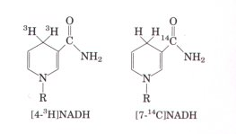

Chemiosmotic theory provides the intellectual framework for understanding many biological energy transductions, including the processes of oxidative phosphorylation in mitochondria and photophosphorylation in chloroplasts. The mechanism of energy coupling is similar in both cases. The conservation of free energy involves the passage of electrons through a chain of membrane-bound oxidation-reduction (redox) carriers and the concomitant pumping of protons across the membrane, producing an electrochemical gradient, the protonmotive force. This force drives the synthesis of ATP by membrane-bound enzyme complexes through which protons flow back across the membrane, down their electrochemical gradient. Protonmotive force also drives other energy-requiring processes of cells.
In mitochondria, H atoms removed from substrates by the action of NAD-linked dehydrogenases donate their electrons to the respiratory (electron transfer) chain, which transfers them to molecular O2, reducing it to H2O. Shuttle systems convey reducing equivalents from cytosolic NADH to mitochondrial NADH. Reducing equivalents from all NAD-linked dehydrogenations are transferred to mitochondrial NADH dehydrogenase (Complex I), which contains FMN as its prosthetic group. They are then passed via a series of Fe-S centers to ubiquinone, which transfers the electrons to cytochrome b, the first carrier in Complex III. In this complex, electrons pass through two b-type cytochromes and cytochrome cl before reaching an Fe-S center. The Fe-S center passes electrons, one at a time, through cytochrome c and into Complex IV, cytochrome oxidase. This copper-containing enzyme, which also contains cytochromes a and a3, accumulates electrons, then passes them to O2, reducing it to H2O.
There are alternative paths of entry of electrons into this chain of carriers. Succinate, for example, is oxidized by succinate dehydrogenase (Complex II), which contains a flavoprotein (with FAD) that passes electrons through several Fe-S centers and into the chain at the level of ubiquinone. Electrons derived from the oxidation of fatty acids pass into ubiquinone via the electron-transferring flavoprotein (ETFP).
The flow of electrons through Complexes I, III, and IV results in the pumping of protons across the mitochondrial inner membrane, making the matrix alkaline relative to the extramitochondrial space. This proton gradient provides the energy (proton-motive force) for ATP synthesis from ADP and Pi by an inner-membrane protein complex, ATP synthase, also called F0F1 ATPase. The details of this ATP-synthesizing mechanism are still under investigation. Bacteria carry out oxidative phosphorylation by essentially the same mechanism, using electron carriers and an ATP synthase in the plasma membrane. Oxidative phosphorylation produces most of the ATP required by aerobic cells; it is regulated by cellular energy demands. In brown fat tissue, which is specialized for the production of metabolic heat, electron transfer is uncoupled from ATP synthesis; the energy of fatty acid oxidation is therefore dissipated as heat.
Photophosphorylation in the chloroplasts of green plants and
in cyanobacteria also involves electron flow through a series of
membrane-bound carriers. In the light reactions of plants, the
absorption of a photon excites chlorophyll molecules and other
(accessory) pigments that funnel the energy into reaction centers
in the thylakoid membranes of chloroplasts. At the reaction
centers, photoexcitation results in a charge separation that
produces one chemical species that is a good electron donor
(reducing agent) and another that is a good electron acceptor. In
chloroplasts there are two different photoreaction centers, which
function
together. Photosystem I passes electrons from its excited
reaction center, P700, through a series of carriers to
ferredoxin, which then reduces NADP+ to NADPH. The reaction
center, P680, of photosystem II passes electrons to
plastoquinone, reducing it to the quinol form. The electrons lost
from P680 are replaced by electrons abstracted from H2O (hydrogen
donors other than H2O are used in other organisms). This
light-driven splitting of H2O is catalyzed by a Mn-containing
protein complex; O2 is produced. Reduced plastoquinone carries
electrons from photosystem II to the cytochrome bf complex; these
electrons pass to the soluble protein plastocyanin, and then to
P700 to replace those lost during its photoexcitation. Electron
flow through the cytochrome bf complex is accompanied by proton
pumping across the thylakoid membrane, and the proton-motive
force thus created drives ATP synthesis by a CF0CF1 complex
closely similar to the F0F1 complex of mitochondria. This flow of
electrons through photosystems II and I thus produces both NADPH
and ATP. A second type of electron flow (cyclic flow) produces
ATP only.
Both mitochondria and chloroplasts contain their own genomes and are believed to have originated from prokaryotic endosymbionts of early eukaryotic cells. Oxidative phosphorylation in aerobic bacteria and photophosphorylation in photosynthetic bacteria are closely similar, in machinery and mechanism, to the homologous processes in mitochondria and chloroplasts.
History and Background
Arnon, D.I. (1984) The discovery of photosynthetic phosphorylation. Trends Biochem. Sci. 9, 258-262.
Harold, F.M. (1986) The Vital Force: A Study in Bioenergetics, W.H. Freeman and Company, New York.A very readable synthesis of the principles of bioenergetics and their application to energy transductions.
Kalckar, H.M. (1991) 50 years of biological research-from oxidative phosphorylation to energy requiring transport regulation. Annu. Reu. Biochem. 60, 1-37.A delightful autobiographical account by one of the pioneers in the field.
Keilin, D. (1966) The History of Cell Respiration and Cytochrome, Cambridge University Press, London.An authoritative and absorbing account of the discovery of cytochromes and of their roles in respiration, written by the discoverer of cytochromes.
Lehninger, A.L. (1964) The Mitochondrion: Molecular Basis of Structure and Function, The Benjamin Co., Inc., New York.A classic description of early work on mitochondria.
Mitchell, P. (1979) Keilin's respiratory chain concept and its chemiosmotic consequences. Science 206, 1148-1159.The author's Nobel lecture, outlining the euolution of the chemiosmotic hypothesis.
Skulachev, V.P. (1992) The laws of cell energetics. Eur. J.
Biochem. 208, 203-209.
On the interconvertibility of ATP and ion gradients.
Slater, E.C. (1987) The mechanism of the conservation of energy of biological oxidations. Eur. J. Biochem. 166, 489-504.A clear and critical account of the euolution of the chemiosmotic model.
Staehelin, L.A. & Arntzen, C.J. (eds) (1986) Photosynthesis 111: Photosynthetic Membranes and Light Harvesting Systems, Encyclopedia of Plant Physiology, Vol. 19, Springer-Verlag, Berlin. Authoritative reviews of many aspects of photosynthesis.
Respiratory Electron FlowBabcock, G.T. & Wickstrom, M. (1992) Oxygen activation and the conservation of energy in cell respiration. Nature 356, 301-309.An advanced discussion of the reduction of water and pumping of protons by cytochrome oxidase.
Douce, R. & Neuburger, M. (1989) The uniqueness of plant mitochondria. Annu. Rev. Plant Physiol. Plant Mol. Biol. 40, 371-414.A focus on the features of plant mitochondria that distinguish them from mitochondria of animal cells.
Hinkle, P.C. & McCarty, R.E. (1978) How cells make ATP. Sci. Am. 238 (March), 104-123. Although not recent, this is an excellent, readable, and well-illustrated description of oxidatiue phosphorylation.
Lehninger, A.L., Reynafarje, B., Alexandre, A., & Villalobo, A. (1980) Respiration-coupled H+ ejection by mitochondria. Ann. N. Y. Acad. Sci. 341, 585-592.The methods and problems in measuring proton efflux stoichiometry.
Malmstrom, B.G. (1989) The mechanism of proton translocation in respiration and photosynthesis. FEBS Lett. 250, 9-21.Comparative review of the electron-transferring complexes of mitochondria and chloroplasts
liwmpower, B.L. (1990) The protonmotive Q cycle: energy transduction by coupling of proton translocation to electron transfer by the cytochrome bcl complex. J. Biol. Chem. 265, 11409-11412.Short, clear description of the Q cycle and electron flow through Complex 111.
Coupling ATP Synthesis to Respiratory Electron Flow
Boyer, P.D. (1989) A perspective of th:e binding change mechanism for ATP synthesis. FASEB J. 3, 2164-2178.An article on the historical development and current state of the binding-change model, by its principal architect.
Futai, M., Noumi, T., & Maeda, M. (1987) Molecular biological studies on structure and mechanism of proton translocating ATPase (H+-ATPase, F0F1). Adv. Biophys. 23, 1-37.Insight into the mechanism of ATP synthase from studies of the genes that encode its subunits.
Pedersen, P.L. & Carafoli, E. (1987) Ion motive ATPases. I. Ubiquity, properties, and significance to cell function. Trends Biochem. Sci. 12, 145-150. II. Energy coupling and work output. Trends Biochem. Sci. 12, 186-189.Two short reviews that place ATP synthase within the family of ATP-dependent proton pumps; include their general mechanisms.
Penefsky, H.S. & Cross, R.L. (1991) Structure and mechanism of FoFI-type ATP synthases and ATPases. Adv. Enzymol. Relat. Areas Mol. Bio. 64, 173-214.An advanced discussion.
Ricquier, D., Casteilla, L., & Bouillaud, F. (1991) Molecular studies of the uncoupling protein. FASEB J. 5, 2237-2242.A discussion of the protein and its role in thermogenesis.
Senior, A.E. (1988) ATP synthesis by oxidative phosphorylation. Physiol. Rev. 68, 177-231.An advanced but very clear review, with an emphasis on the mechanism of ATP synthase.
Regulation of Mitochondrial Oxidative Phosphorylation
Brand, M.D. & Murphy, M.P. (1987) Control of electron flux through the respiratory chain in mitochondria and cells. Biol. Rev. Cambridge Phil. Soc. 62, 141-193.An advanced description of respiratory control.
Harris, D.A. & Das, A.M. (1991) Control of mitochondrial ATP synthesis in the heart. Biochem. J. 280, 561-573.An advanced discussion of regulation of the ATP synthase by Ca2+ and other factors.
Photosynthesis: Harvesting Light EnergyGreen, B.R., Pichersky, E., & HIoppstech, K. (1991) Chlorophyll a/b-binding proteins: an extended family. Trends Biochem. Sci. 16, 181-186. An intermediate-level description of the proteins that orient chlorophyll molecules in chloroplasts.
Huber, R. (1990) A structural basis of light energy and electron transfer in biology. Eur. J. Biochem. 187, 283-305.The author's Nobel lecture, describing the physics and chemistry of phototransductions. An exceptionally clear and well-illustrated discussion, based on crystallographic studies of reaction centers.
Zuber, H. (1986) Structure of light-harvesting antenna complexes of photosynthetic bacteria, cyanobacteria and red algae. Trends Biochem. Sci. 11, 414-419.
Light-Driuen Electron Flow
Andreasson, L.-E. & Vanngard, T. (1988) Electron transport in photosystems I and II. Annu. Rev. Plant Physiol. Plant Mol. Biol. 39, 379-411.An advanced description of the path of electron fZow in chloroplasts, studied with spectroscopic techniques.
Blankenship, R.E. & Prince, R.C. (1985) Excitedstate redox potentials and the Z scheme of photosynthesis. Trends Biochem. Sci. 10, 382-383.A concise and lucid statement of the redox properties o fexcited states.
Deisenhofer, J. & Michel, H. (1991) Structures of bacterial photosynthetic reaction centers. Annu. Rev. Cell Biol. 7, 1-23.The structure of the reaction center of purple bacteria, and implications for the function of bacterial and plant reaction centers.
Glazer, A.N. & Melis, A. (1987) Photochemicalreaction centers: structure, organization, and function. Annu. Rev. Plant Physiol. 38, 11-45.An advanced description of the structure and function of reaction centers of green plants, cyanobacteria, and purple and green bacteria.
Golbeck, J.H. (1992) Structure and function of photosystem I. Annu. Rev. Plan,t Physiol. Plant Mol. Biol. 43, 293-324.
Govindjee & Coleman, W.J. (1990) How plants make oxygen. Sci. Am. 262 (February), 50-58. An exceptionally clear account of the water-splitting activity of photosystem 11.
Nitschke, W. & Rutherford, A.W. (1991) Photosynthetic reaction centres: variations on a common structural theme? Trends Biochem. Sci. 16, 241245.A comparison of the structure and function of photosystems I and II and the reaction centers of several photosynthetic bacteria.
Coupling ATP Synthesis to Light-Driuen Electron Flow
Cramer, W.A., Widger, W.R., Herrmann, R.G., & Trebst, A. (1985) Topography and function of thylakoid membrane proteins. Trends Biochem. Sci. 10, 125-129.
Jagendorf, A.T. (1967) Acid-base transitions and phosphorylation by chloroplasts. Fed. Proc. 26, 1361-1369.The classic experiment establishing the ability of a proton gradient to drive ATP synthesis in the dark.
Youvan, D.C. & Marrs, B.L. (1987) Molecular mechanisms of photosynthesis. Sci. Am. 256 (June), 42-48.An excellent description of the chemical basis for light reactions.
l.Oxidation-Reduction Reactions The NADH dehydrogenase complex of the mitochondrial respiratory chain promotes the following series of oxidation-reduction reactions, in which Fe3+ and Fe2+ represent the iron in iron-sulfur centers, UQ is ubiquinone, UQHz is ubiquinol, and E is the enzyme:
(1) NADH + H+ + E-FMN
NAD+ + E-FMNH2
(2) E-FMNH2 + 2Fe3+
(3) 2Fe2+ + 2H+ + UQ
Sum: NADH + H+ + UQ
For each of the three reactions catalyzed by the NADH dehydrogenase complex, identify
(a) theelectron donor,
(b) the electron acceptor,
(c) the conjugate redox pair,
(d) the reducing agent, and
(e) the oxidizing agent.
2. Standard Reduction Potentials The standard reduction potential of any redox couple is defined for the half cell reaction (or half reaction):
Oxidizing agent + n electrons reducing
agent
The standard reduction potentials of the NAD+ / NADH and pyruvate/lactate redox pairs are -0.320 and -0.185 V, respectively.
(a) Which redox pair has the greater tendency to lose electrons? Explain.
(b) Which is the stronger oxidizing agent? Explain.
(c) Beginning with 1 M concentrations of each reactant and product at pH 7, in which direction will the following reaction proceed?
Pyruvate + NADH + H+lactate + NAD+
(d) What is the standard free-energy change, ΔG°', at 25 °C for this reaction?
(e) What is the equilibrium constant for this reaction at 25 °C?
3. Energy Span of the Respircztory Chain Electron transfer in the mitochondrial respiratory chain may be represented by the net reaction equation
NADH + H+ + ½2O2 H2O + NAD+
(a) Calculate the value of the change in standard reduction potential, ΔE'0, for the net reaction of mitochondrial electron transfer.
(b) Calculate the standard free-energy change, ΔG°', for this reaction.
(c) How many ATP molecules could theoretically be generated per molecule of NADH oxidized by this reaction, given a standard free energy of ATP synthesis of 30.5 kJ/mol?
(d) How many ATP molecules could be synthesized under typical cellular conditions (see Box 13-2 )?
4. Use of FAD Rather Than NAD+ in the Oxidcztion of Succinate All the dehydrogenation steps in glycolysis and the citric acid cycle use NAD+ (E0 for NAD+/NADH = -0.32 V) as the electron acceptor except succinate dehydrogenase, which uses covalently bound FAD (Eo for FAD/FADH2 in this enzyme = 0.05 V). Why is FAD a more appropriate electron acceptor than NAD+ in the dehydrogenation of succinate? Give a possible explanation based on a comparison of the E0 values of the fumarate/succinate pair (Eo = 0.03), the NAD+/NADH pair, and the succinate dehydrogenase FAD/ FADH2 pair.
5. Degree of Reduction of Electron Carriers in the Respiratory Chain The degree of reduction of each electron carrier in the respiratory chain is determined by the conditions existing in the mitochondrion. For example, when the supply of NADH and O2 is abundant, the steady-state degree of reduction of the carriers decreases as electrons pass from the substrate to O2. When electron transfer is blocked, the carriers before the block become more reduced while those beyond the block become more oxidized (Fig. 18-7). For each of the conditions below, predict the state of oxidation of each carrier in the respiratory chain (ubiquinone and cytochromes b, cl, c, and a + a3).
(a) Abundant supply of NADH and O2 but cyanide added
(b) Abundant supply of NADH but O2 exhausted
(c) Abundant supply of O2 but NADH exhausted (d) Abundant supply of NADH and O2
6. The Effect of Rotenone and Antimycin A on Electron Transfer Rotenone, a toxic natural product from plants, strongly inhibits NADH dehydrogenase of insect and fish mitochondria. Antimycin A, a toxic antibiotic, strongly inhibits the oxidation of ubiquinol.
(a) Explain why rotenone ingestion is lethal to some insect and fish species.
(b) Explain why antimycin A is a poison.
(c) Assuming that rotenone and antimycin A are equally effective in blocking their respective sites in the electron transfer chain, which would be a more potent poison? Explain.
7. Uncouplers of OxidcztiUe Phosphorylation In normal mitochondria the rate of electron transfer is tightly coupled to the demand for ATP. Thus when the rate of utilization of ATP is relatively low, the rate of electron transfer is also low. Conversely, when ATP is demanded at a high rate, electron transfer is rapid. Under such conditions of tight coupling, the number of ATP molecules produced per atom of oxygen consumed when NADH is the electron donor-known as the P/O ratio-is close to 3.
(a) Predict the effect of a relatively low and a relatively high concentration of an uncoupling agent on the rate of electron transfer and the P/O ratio.
(b) The ingestion of uncouplers causes profuse sweating and an increase in body temperature. Explain this phenomenon in molecular terms. What happens to the P/O ratio in the presence of uncouplers?
(c) The uncoupler 2,4-dinitrophenol was once prescribed as a weight-reducing drug. How can this agent, in principle, serve as a reducing aid? Such uncoupling agents are no longer prescribed because some deaths occurred following their use. Why can the ingestion of uncouplers lead to death?
8. Mode of Action of Dicyclohexylcarbodiimide (DCCD) When DCCD is added to a suspension of tightly coupled, actively respiring mitochondria, the rate of electron transfer (measured by O2 consumption) and the rate of ATP production dramatically decrease. If a solution of 2,4-dinitrophenol is now added to the inhibited mitochondrial preparation, O2 consumption returns to normal but ATP production remains inhibited.
(a) What process in electron transfer or oxidative phosphorylation is affected by DCCD?
(b) Why does DCCD affect the O2 consumption of mitochondria? Explain the effect of 2,4-dinitrophenol on the inhibited mitochondrial preparation.
(c) Which of the following inhibitors does DCCD most resemble in its action: antimycin A, rotenone, or oligomycin?
9. The Malate-α-Ketoglutarate Transport System of Mitochondria The inner mitochondrial membrane transport system that promotes the transport of malate and α-ketoglutarate across the membrane (Fig. 18-25) is inhibited by n-butylmalonate. Suppose n-butylmalonate is added to an aerobic suspension of kidney cells using glucose exclusively as fuel. Predict the effect of this inhibitor on
(a) Glycolysis
(b) Oxygen consumption
(c) Lactate formation
(d) ATP synthesis
10. The Pasteur Effect When O2 is added to an anaerobic suspension of cells using glucose at a high rate, the rate of glucose consumption declines dramatically as the added O2 is consumed. In addition, the accumulation of lactate ceases. This ef fect, first observed by Louis Pasteur in the 1860s, is characteristic of most cells capable of both aerobic and anaerobic utilization of glucose.
(a) Why does the accumulation of lactate cease after O2 is added?
(b) Why does the presence of O2 decrease the rate of glucose consumption?
(c) How does the onset of O2 consumption slow down the rate of glucose consumption?
Explain in terms of specific enzymes.
11. How Many Protons in a Mitochondrion? Electron transfer functions to translocate protons from the mitochondrial matrix to the external medium to establish a pH gradient across the inner membrane, the outside more acidic than the inside. The tendency of protons to diffuse from the outside into the matrix, where [H+] is lower, is the driving force for ATP synthesis via the ATP synthase. During oxidative phosphorylation by a suspension of mitochondria in a medium of pH 7.4, the internal pH of the matrix has been measured as 7.7.
(a) Calculate [H+] in the external medium and in the matrix under these conditions.
(b) What is the outside:inside ratio of [H+]? Comment on the energy inherent in this concentration. (Hint: See p. 383, Eqn 13-5.)
(c) Calculate the number of protons in a respiring liver mitochondrion, assuming its inner matrix compartment is a sphere of diameter 1.5 μm.
(d) From these data would you think the pH gradient alone is sufficiently great to generate ATP?
(e) If not, can you suggest how the necessary energy for synthesis of ATP arises?
12. Rate of ATP Turnouer in Rat Heart Muscle Rat heart muscle operating aerobically fills more than 90% of its ATP needs by oxidative phosphorylation. This tissue consumes O2 at the rate of 10 μmol/ min&•g of tissue, with glucose as the fuel source.
(a) Calculate the rate at which this tissue consumes glucose and produces ATP.
(b) If the steady-state concentration of ATP in rat heart muscle is 5 μmol/g of tissue, calculate the time required (in seconds) to completely turn over the cellular pool of ATP. What does this result indicate about the need for tight regulation of ATP production? (Note: Concentrations are expressed as micromoles per gram of muscle tissue because the tissue is mostly water. )
13. Rate of ATP Breakdown in Flight Muscle ATP production in the flight muscles of the fly Lucilia sericata results almost exclusively from oxidative phosphorylation. During flight, 187 ml of O2 / h•g of fly body weight is needed to maintain an ATP concentration of 7 μmol/g of flight muscle. Assuming that the flight muscles represent 20?0 of the weight of the fly, calculate the rate at which the flight-muscle ATP pool turns over. How long would the reservoir of ATP last in the absence of oxidative phosphorylation? Assume that reducing equivalents are transferred by the glycerol-3-phosphate shuttle and that O2 is at 25 °C and 101.3 kPa (1 atm). (Note: Concentrations are expressed in micromoles per gram of flight muscle. )

14. Transmembrane Movement of Reducing Equivalents Under aerobic conditions, extramitochondrial NADH must be oxidized by the mitochondrial electron transfer chain. Consider a preparation of rat hepatocytes containing mitochondria and all the enzymes of the cytosol. If [4-3H]NADH is introduced, radioactivity appears quickly in the mitochondrial matrix. However, if [7-l4C]NADH is introduced, no radioactivity appears in the matrix. What do these observations tell us about the oxidation of extramitochondrial NADH by the electron transfer chain?15. Photochemical Efficiency of Light at Different Wavelengths The rate of photosynthesis, measured by O2 production, is higher when a green plant is illuminated with light of wavelength 680 nm than with light of 700 nm. However, illumination by a combination of light of 680 nm and 700 nm gives a higher rate of photosynthesis than light of either wavelength alone. Explain.
16. Role of H2S in Some Photosynthetic Bacteria Illuminated purple sulfur bacteria carry out photosynthesis in the presence of H2O and 14CO2, but only if H2S is added and O2 is absent. During the course of photosynthesis, measured by formation of [l4C]carbohydrate, H2S is converted into elemental sulfur, but no O2 is evolved. What is the role of the conversion of H2S into sulfur? Why is no O2 evolved?
17. Boosting the Reducing Power of Photosystem I by Light Absorption When photosystem I absorbs red light at 700 nm, the standard reduction potential of P700 changes from 0.4 to about -1.2 V. What fraction of the absorbed light is trapped in the form of reducing power?
18. Mode of Action of the Herbicide DCMU When chloroplasts are treated with 3-(3,4-dichlorophenyl)-1,1-dimethylurea (DCMU, or Diuron), a potent herbicide, O2 evolution and photophosphorylation cease. Oxygen evolution but not photophosphorylation can be restored by the addition of an external electron acceptor, or Hill reagent. How does this herbicide act as a weed killer? Suggest a location for the inhibitory site of this herbicide in the scheme shown in Figure 18-44. Explain.
19. Bioenergetics of Photophosphorylation The steady-state concentrations of ATP, ADP, and Pi in isolated spinach chloroplasts under full illumination at pH 7.0 are 120, 6, and 700 μm, respectively.
(a) What is the free-energy requirement for the synthesis of 1 mol of ATP under these conditions?
(b) The energy for ATP synthesis is furnished by light-induced electron transfer in the chloroplasts. What is the minimum voltage drop necessary during the transfer of a pair of electrons to synthesize ATP under these conditions? (You may need to refer to p. 389, Eqn 13-8.)
20. Equilibrium Constant for Water-Splitting Reactions The coenzyme NADP+ is the terminal electron acceptor in chloroplasts, according to the reaction
2H2O + 2NADP+ 2NADPH + 2H+ + O2
Use the information in Table 18-2 to calculate the equilibrium constant at 25 °C for this reaction. (The relationship between Keq and ΔG°' is discussed on p. 368. ) How can the chloroplast overcome this unfavorable equilibrium?
21. Energetics of Phototransduction During photosynthesis, eight photons of light must be absorbed (four by each photosystem) for every 02 molecule produced:
H2O + 2NADP+ + 8 photons 2NADPH + 2H+
+ O2
Assuming that these photons have a wavelength of 700 nm (red) and that the absorption and utilization of light energy are 100% efficient, calculate the free-energy change for the process.
22. Electron Transfer to a Hill Reagent Isolated spinach chloroplasts evolve Oz when illuminated in the presence of potassium ferricyanide (the Hill reagent), according to the equation
2H2O + 4Fe3+ O2 + 4H+ + 4Fe2+
where Fe3+ represents ferricyanide and Fe2+, ferrocyanide. Is NADPH produced in this process? Explain.
23. How Often Does a Chlorophyll Molecule Absorb a Photon? The amount of chlorophyll a (Mr 892) in a spinach leaf is about 20 μg/cm2 of leaf. In noonday sunlight (average energy 5.4 J/cm2 •min), the leaf absorbs about 50% of the radiation. How often does a single chlorophyll molecule absorb a photon? If the average lifetime of an excited chlorophyll molecule in vivo is 1 ns, what fraction of chlorophyll molecules are excited at any one time?
24. Effect of Monochromatic Light on Electron Flow The extent to which an electron carrier is oxidized or reduced during photosynthetic electron transfer can sometimes be observed directly with a spectrophotometer. When chloroplasts are illuminated with 700 nm light, cytochrome f, plastocyanin, and plastoquinone are oxidized. When chloroplasts are illuminated with 680 nm light, however, these electron carriers are reduced. Explain.
25. Function of Cyclic Photophosphorylation When the (NADPH)/[NADP+] ratio in chloroplasts is high, photophosphorylation is predominantly cyclic (Fig. 18-44). Is O2 evolved during cyclic photophosphorylation? Explain. Can the chloroplast produce NADPH this way? What is the main function of cyclic photophosphorylation?